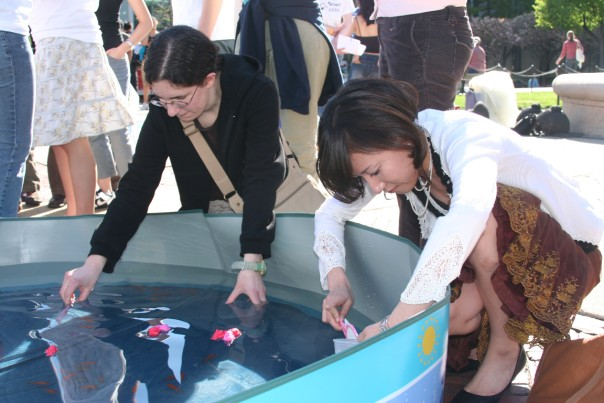
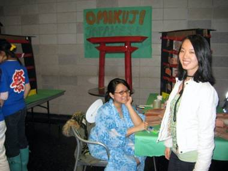
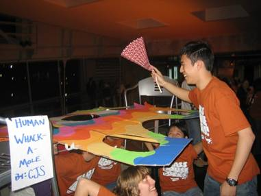
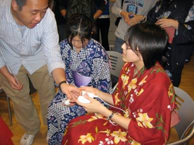

-
CJS EN'NICHI CORNER
"En'nichi" is another Japanese word for "festival" or "fair." Come check out some traditional Japanese festival booths run by our very own CJS members and volunteers!
Kingyo Sukui
Kingyo Sukui means "goldfish scooping." The game, which started during the Edo period, is very simple. Using a paper scoop, try to scoop as many goldfish into your bowl of water as you can! But the longer your scoop is in the water, the weaker it becomes...
-
Jinja
Jinja is the Japanese word for a Shinto shrine. Matsuri are traditionally associated with the Shinto activity of enshrining a god. Today, traditional matsuri are still held on shrine grounds. To try to reenact some of the feel of a traditional matsuri, CJS MATSURI 2008 will have a booth with some shrine activities such as "omikuji" and "ema," a place to get your fortune and write your wishes, respectively.
 -
Sumo Wrestling
Wear inflatable sumo suits and experience what it's like to participate in the most exhilirating physical competition in the world!
-
Whack-a-Mole!
Everyone knows regular whack-a-mole. You hit annoying moles that stick out of their holes with a cushioned hammer. BOOOORING! Play wack-a-mole CJS-style, where moles are living breathing evading and fearing! Yes, the moles are us and you and your friends! Get underneath are specially-made whack-a-mole contraption and start evading your friends evil hits!
 -
Shateki
Shateki means shooting targets. Traditionally in Japanese festivals, the guns shoot corks. We couldn't afford those guns. So we got marshmallow guns instead! Shoot those marshmallows at the targets and get a chance to win big prizes! Of course, we will turn a blind eye if you start missing shots into your own mouth...
-
Face Painting
Get one of our great artists to paint things on your face or perhaps take a chance with a guy who has absolutely no art skills! Try painting stuff on your own face if you'd like! Whatever!

-
Calligraphy
Do you know what your name looks like in Japanese? Would you like to have it written for you in real ink and brush? Head over to this booth and get it done for you for free!

-
Wii
The video game industry has been shook tremendously by Nintendo's Wii. Coupled with the handheld system, the DS, Nintendo holds almost all of the world's video game industry by itself! Experience Nintendo's all powerful, completely intuitive gaming system, the Wii!
 -
Japan Info Booth
Ever wanted to speak to a real Japanese person? What are they like? What kind of fashion are they into? What kind of movies do they watch? What do they think of American politics? What kind of music do they listen to? Why don't you ask yourself? Come to this booth and talk to ordinary Japanese people on ordinary issues. They aren't college professors, they're people like you and me. And you're going to get responses from people like you or me.
-
Water Yo-yo Fishing
Goldfish scooping sounds fun, but I can't raise a goldfish! Well, try the less living alternative, Water Yo-yo Fishing. It's just as difficult but with much less responsibility! Plus, you can play way more with a water yo-yo than a goldfish. This booth is brought to you by Amnet.